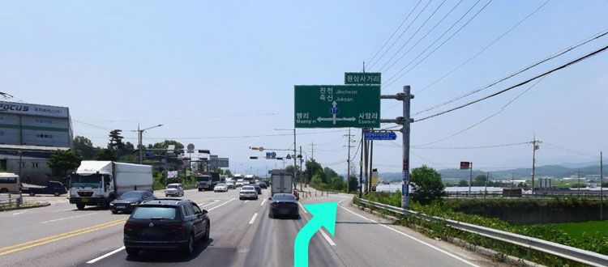
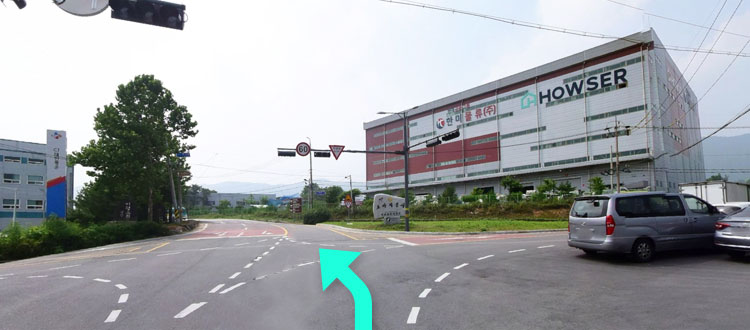
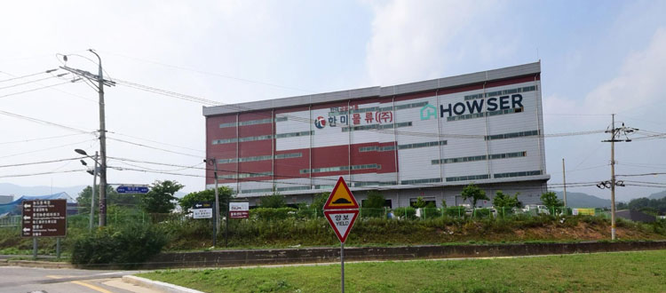
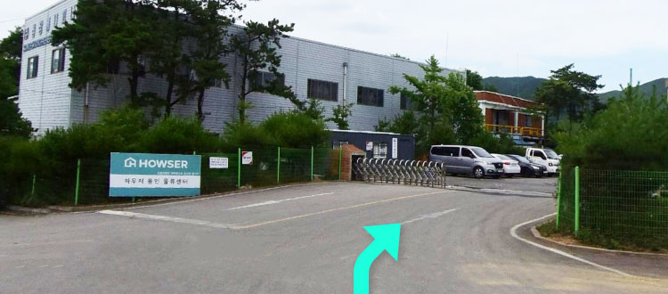

물류센터안내 본문
물류센터 안내
용인센터 안내 본문
주소
- 지번
- 경기 용인시 처인구 원삼면 좌항리 324-10 하우저 용인센터
- 도로명
- 경기 용인시 처인구 원삼면 원양로 487 하우저 용인센터
티맵 연결하기
카카오 내비 연결하기
네이버 내비 연결하기
- 전화번호
- 1800-8335(2-2번) 물류팀
- 점심시간
- 12:00 ~ 13:00
점심시간에는 입고 및 상하차 업무를 진행하지 않습니다. 13:00시부터 업무가 재개되니, 대기장소에서 대기해 주시기 바랍니다.
오시는 길
-

양지 IC에서 원삼사거리까지 직진, 원삼사거리에서 우회전하세요.
-

원삼삼거리에서 우회전 후 계속 직진하시면 작은 사거리가나옵니다. 사거리에서 11시 방향으로 꼭 직진해주세요.(우회전 하면 다른 물류센터 입구로 진입하게 되니 주의하세요.)
-

우측 건물에 하우저 간판이 보입니다. (한미물류 건물)
-

우측에 입구가 있습니다. 입구로 들어오셔서 하우저 직원의 안내를 받으시면 됩니다.
안내사항
- 센터 도착 전 한 번 더 주소 확인을 부탁드립니다.
(용인센터 or 양지센터) - 도착 후 하우저 담당 직원에게 어느 가구사의 상품인지, 또는 어느 지역으로 배송인지(지방상차) 확인 후 직원의 안내를 받으시기 바랍니다.
- 먼저 진입한 차량이 있는 경우, 직원의 안내에 따라 대기 장소에서 대기해 주세요. 도착 순서대로 업무가 진행됩니다.